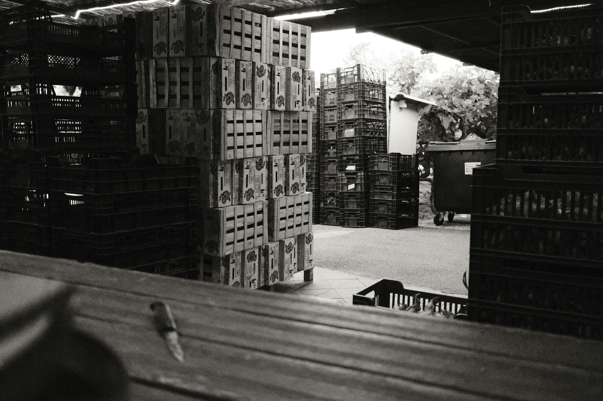

오시는 길
출하 차량은 정문 계근대를 거쳐 배정받은 하차장으로 갑니다. 11톤 차량은 북문으로 들어옵니다.
- 주소
- 이랑골시 두렁로 40 (가상 주소)
- 문의
- 010-0000-0000 · gyeongmae@irangol.example
운영 시각
- 반입
- 월요일~토요일 00:00~02:30
- 경매
- 월요일~토요일 03:00~08:00
- 사무실
- 평일 09:00~18:00
- 휴장
- 일요일
약도
- 자동차
- 이랑골 나들목에서 두렁로 6 km · 정문
- 11톤 차량
- 북문 전용 · 정문 진입 불가
- 버스
- 두렁로 공판장 앞 정류장 · 시내버스 12번 · 05:40 첫차
- 주차
- 출하 차량 하차 뒤 북쪽 주차장 (2시간 무료)
하차장 배치
| 하차장 | 구분 | 품목 |
|---|---|---|
| A | 과일 | 사과 · 배 |
| B | 과일 | 감귤 · 단감 |
| C | 과일 | 포도 · 기타 과일 |
| D | 채소 | 배추 |
| E | 채소 | 무 · 양파 |
| F | 채소 | 대파 · 애호박 |
반입 요령
- 정문 계근대차량째 무게 재기 · 반입번호 말하기
- 하차장 배정과일 A~C · 채소 D~F
- 하차팔레트째 내리기 · 상자 옆면 출하자 표 확인
- 검수검수원이 상자 3개를 열어 등급 확인
- 빈 차 계근나갈 때 다시 무게 재기 · 차이가 반입 중량
하역장
